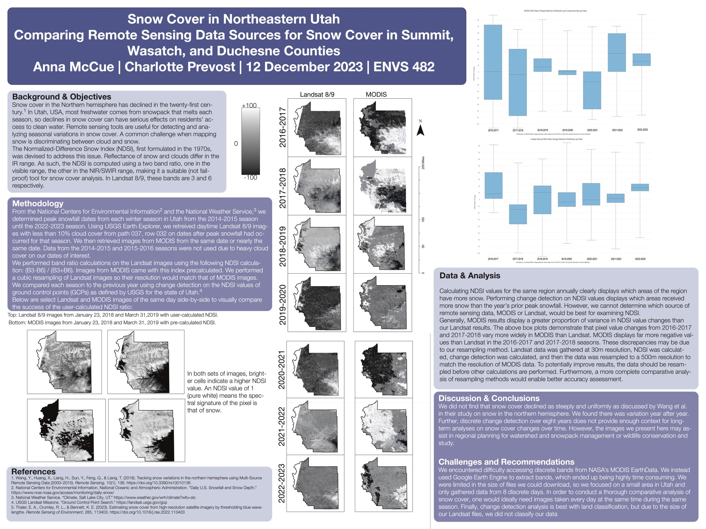

This is a non-interactive, static analysis portfolio piece: a reproducible remote sensing workflow for multi-year snow-cover dynamics in alpine regions, documented in the report below.
webapps/alps_snowcover_time_analysis/ until it is published.
If the preview is empty, add artifacts/alps_snow_cover_analysis.pdf next to this page and redeploy.
PDF not found. Place your report at:
site/projects/alps-snowcover-time-analysis/artifacts/alps_snow_cover_analysis.pdf
Mirror the same path under webapps/alps_snowcover_time_analysis/artifacts/ for the future repo.

Visual summary: multi-year snow-cover change patterns relevant to climate and water-resource risk framing.
Methodology and code will live in the forthcoming GitHub repository (same layout as
alps_snowcover_time_analysis/ in your webapps workspace).